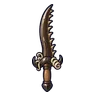

ด้วงฟันเลื่อย
มอนธาตุดิน Lv 76–86
เจอที่
| แมพ | โซน | Lv | ภูมิภาค |
|---|---|---|---|
| อู่ต่อเรือร้าง | 76–86 | เมืองหอระฆัง | |
| อู่ต่อเรือร้าง | โครงเรือไม่เสร็จ | 83–86 | เมืองหอระฆัง |
ค่าสถานะตามเลเวล
| Lv | HP | ATK | DEF | MDEF | EXP | Job |
|---|---|---|---|---|---|---|
| 76 | 49,532 | 162–244 | 30 | 14 | 94 | 71 |
| 81 | 59,906 | 176–263 | 32 | 15 | 99 | 74 |
| 86 | 71,817 | 190–285 | 34 | 15 | 105 | 79 |
ตีด้วยธาตุไหนดี
แรงขึ้น: ไฟ ×1.5 พิษ ×1.25
เบาลง: ลม ×0.5 ดิน ×0.25
วัตถุดิบที่ดรอป
| ของ | โอกาส | |
|---|---|---|
| ฟันเลื่อยด้วง | 55% | 1 ชิ้น (15% ได้ 2) |
อุปกรณ์ที่ดรอป (1)
| ของ | โอกาส |
|---|---|
 ดาบคู่ด้วงฟันเลื่อย | 0.25% |
สกิล
ร่างแข็ง (Lv 25+) · ร่างแข็ง (Lv 60+) · ทุบพื้น (Lv 60+)